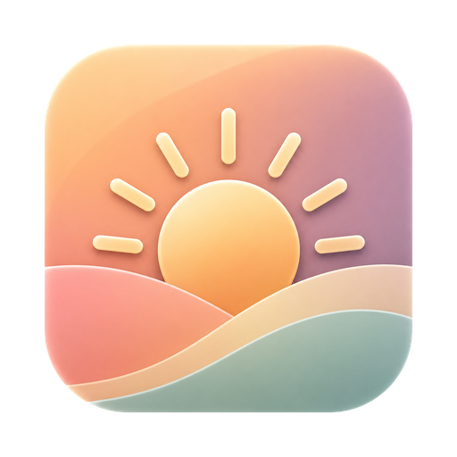

StayOn
A tiny menu bar utility that keeps your Mac running with the lid closed, and lets it sleep again when the battery runs low.
For Mac · macOS 13 or later
Awake with the lid closed
Click the coffee cup in your menu bar and your Mac keeps running when you close the lid — for long builds, downloads, or anything that must not be interrupted. A filled cup means sleep is off; an empty one means your Mac sleeps as usual. Click again to switch back.
Dims the screen for you
While StayOn is on, closing the lid turns the display brightness down to zero. Open the lid and it returns to where you left it.
Knows when to stop
With the lid closed, StayOn checks every ten minutes and lets your Mac sleep again if the battery falls below 10% or if Claude is no longer running — so a finished job doesn't drain the battery in your bag.
One-time setup
Turning sleep off system-wide needs administrator rights. The first time you open StayOn it asks for your password once and adds a narrow rule that lets it run exactly two commands — sleep off and sleep on — without asking again. Start at Login is in the right-click menu.
And nothing else
No accounts, no analytics, no tracking, no network connections. StayOn lives in your menu bar, uses almost nothing, and stays out of your way.